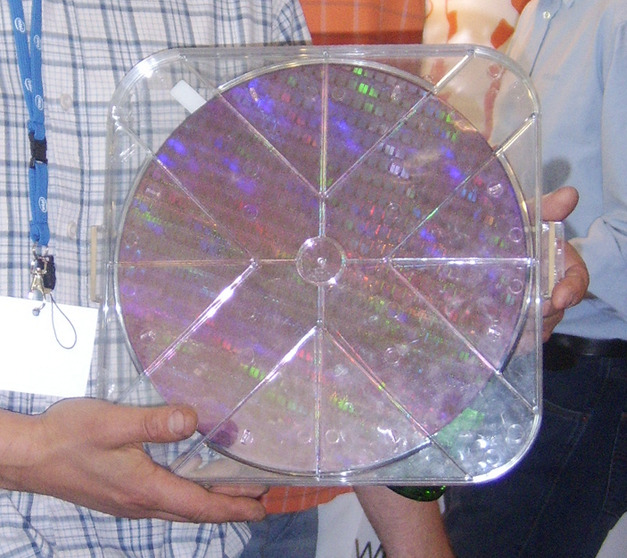

A wafer (also called a slice or substrate)[1] is a thin slice of semiconductorused for the fabrication of integrated circuits and, in photovoltaics, to manufacture solar cells. The wafer serves as the substrate for microelectronic devices built in and upon the wafer. It undergoes many microfabrication processes, such as doping, ion implantation, etching, thin-film deposition of various materials, and photolithographic patterning. Finally, the individual microcircuits are separated by wafer dicing and packaged as an integrated circuit.
The client will send data in multiple sets of files in batches at a given location. Data will contain Wafer names and 590 columns of different sensor values for each wafer. The last column will have the "Good/Bad" value for each wafer. "Good/Bad" column will have two unique values +1 and -1. "+1" represents Good wafer. "-1" represents Bad Wafer.